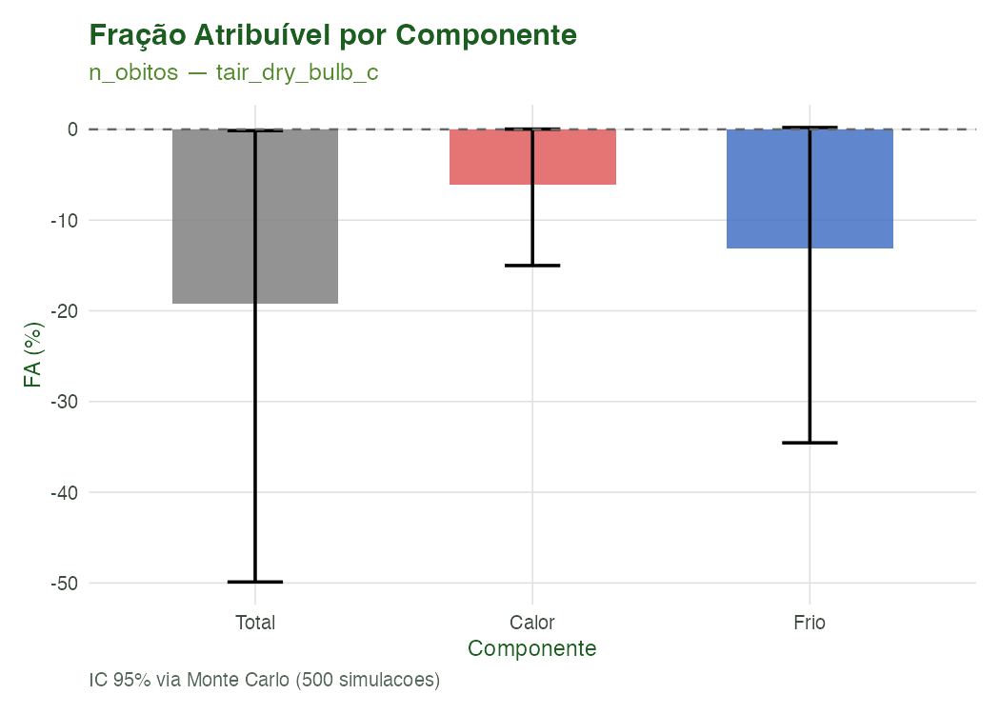
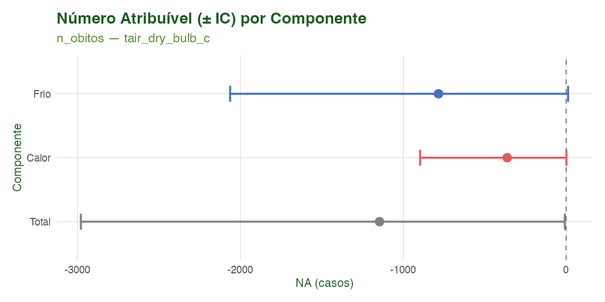
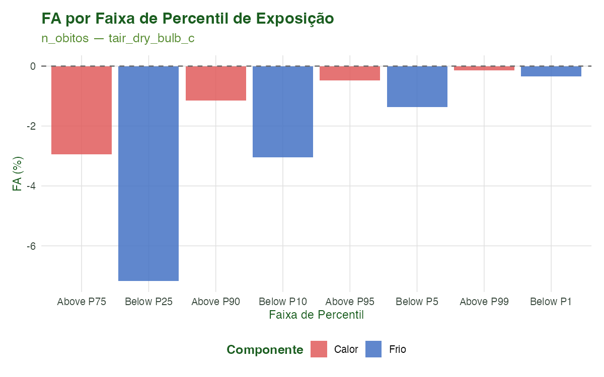
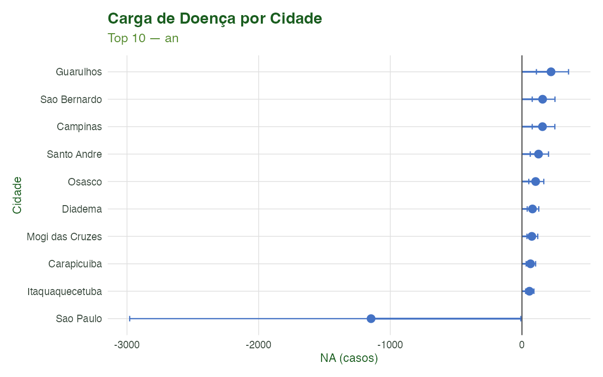
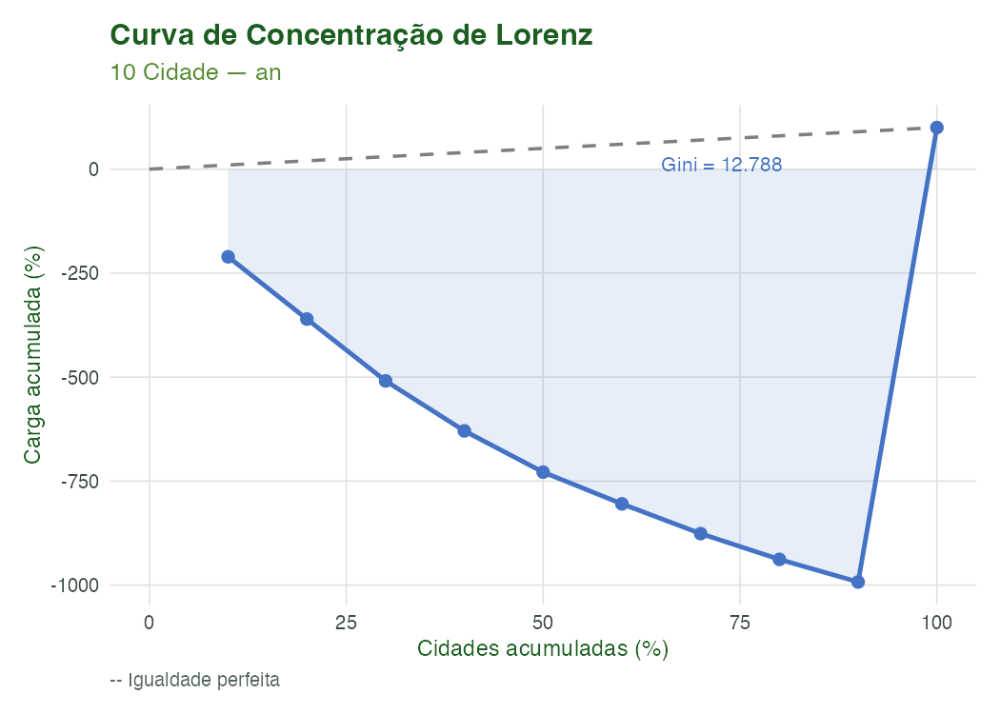
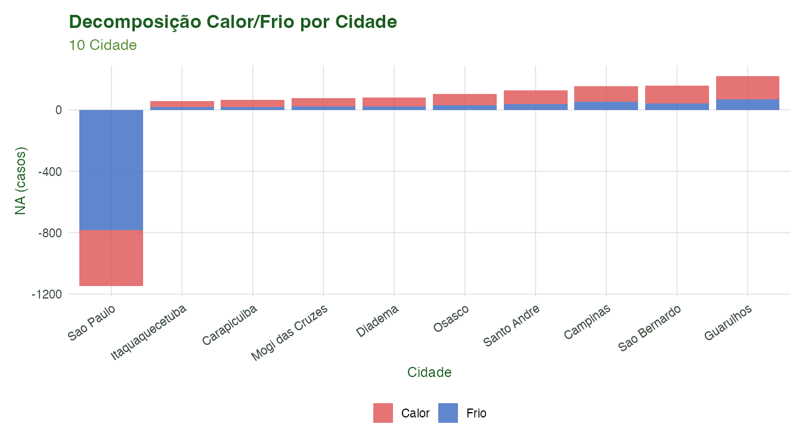

Modelagem 02: Carga Atribuível e Excesso de Mortalidade
Equipe climasus4r
10/07/2026
Source:vignettes/mod-02-atribuivel.Rmd
mod-02-atribuivel.RmdObjetivo
Ao final deste tutorial você será capaz de:
- Calcular a Fração e o Número Atribuível (FA/NA) ao calor e ao frio a partir de um modelo DLNM ajustado, com intervalos de confiança por Monte Carlo;
- Estimar o excesso de mortalidade observado versus o contrafactual esperado, usando três métodos de baseline;
- Ranquear a carga de doença entre municípios da Região Metropolitana de São Paulo, identificando desigualdades na distribuição do risco ambiental;
- Visualizar e interpretar cada resultado com os gráficos pareados do pacote.
Este é o segundo módulo da série de Modelagem do
climasus4r. A entrada principal é o objeto
climasus_dlnm produzido no Módulo 1
(mod_dlnm_fit.rds). As saídas ficam disponíveis como
mod_af.rds para reuso em módulos posteriores.
Contexto científico
Fração Atribuível de Risco em epidemiologia ambiental
A Fração Atribuível de Risco (FA, Attributable Fraction) quantifica a proporção de casos de uma doença que pode ser atribuída a uma determinada exposição na população. No contexto de estudos clima-saúde, estima-se qual parcela das mortes respiratórias em idosos seria evitável se a temperatura estivesse fixada no valor de referência (geralmente a mediana ou o mínimo de mortalidade).
A metodologia foi sistematizada por Gasparrini & Armstrong (2013) e aplicada em escala global por Gasparrini et al. (2017), mostrando que 7,71% das mortes globais são atribuíveis a temperaturas não-ótimas — com o frio respondendo pela maior parcela na maioria das regiões.
Excesso de mortalidade
O excesso de mortalidade (diferença entre observado e esperado) é amplamente usado para avaliar o impacto de ondas de calor, pandemias e eventos extremos. O esperado é estimado por um modelo de baseline (spline de séries temporais, regressão de Serfling ou o contrafactual do DLNM). O método de Serfling (1963) usa regressão harmônica para capturar a sazonalidade sem suprimir o sinal de interesse.
Carga de doença e desigualdades espaciais
A distribuição do risco climático entre municípios raramente é uniforme. A curva de Lorenz (e o índice de Gini derivado) quantifica o grau de concentração da carga: quanto mais côncava a curva em relação à diagonal de igualdade perfeita, maior a iniquidade espacial da carga. Essa análise é inspirada na abordagem multi-cidade de Gasparrini et al. (2017, The Lancet Planetary Health) e é essencial para priorizar intervenções de adaptação climática.
Dados utilizados
| Objeto | Origem | Conteúdo |
|---|---|---|
mod_dlnm_fit.rds |
Módulo M1 | Objeto climasus_dlnm ajustado para a RMSP |
caso_serie.rds |
Tutorial T4 | Série diária de óbitos por município |
caso_clima_estacao.rds |
Tutorial T7 | Temperatura diária INMET (estação A701) |
Caso condutor: Temperatura e desfechos de saúde em idosos (60+) na Região Metropolitana de São Paulo, 2014–2019 (CID-10: J00–J99, doenças respiratórias).
Se os artefatos anteriores não existirem na pasta
vignettes-pt/dados/, o script
modelagem_02_atribuivel.R sintetiza automaticamente uma
série diária realista e ajusta os modelos sobre ela, garantindo que o
pipeline rode de ponta a ponta.
Pipeline completo
Carregar o fit DLNM do Módulo 1
# Guarda: verifica se o arquivo foi gerado pelo Módulo M1.
# Caminho relativo — o Rmd é renderizado a partir de vignettes-pt/.
dlnm_path <- "dados/mod_dlnm_fit.rds"
if (file.exists(dlnm_path)) {
mod_dlnm_fit <- readRDS(dlnm_path)
} else {
stop(
"mod_dlnm_fit.rds não encontrado. ",
"Execute primeiro: Rscript scripts/modelagem_01_dlnm.R"
)
}Fração e Número Atribuível — sus_mod_af()
mod_af <- sus_mod_af(
fit = mod_dlnm_fit,
threshold = NULL, # usa ref_value do DLNM (mediana de temperatura)
pred_at = c(0.75, 0.90, 0.95, 0.99), # percentis de interesse
by = "year", # decompõe o AN/FA por ano
nsim = 500L, # simulações Monte Carlo para IC 95%
alpha = 0.05,
lang = "pt",
verbose = TRUE
)
# Inspecionar o resultado
print(mod_af)
mod_af$total # tabela total/calor/frio
mod_af$by_quantile # FA por percentil
mod_af$by_period # FA/AN por anoSalvar para reuso
# Caminho relativo — renderizado a partir de vignettes-pt/
saveRDS(mod_af, "dados/mod_af.rds")Excesso de mortalidade — sus_mod_excess()
Método from_dlnm (contrafactual a partir do DLNM)
# Quando data é climasus_dlnm, method = "from_dlnm" é detectado automaticamente
# e outcome_col é inferido do meta$outcome_col do fit.
# study_period sem control_period usa todo o período disponível no DLNM.
mod_excess_dlnm <- sus_mod_excess(
data = mod_dlnm_fit,
method = "from_dlnm",
study_period = c(as.Date("2014-01-01"), as.Date("2019-12-31")),
threshold_z = 1.96,
by = "year",
lang = "pt",
verbose = TRUE
)
print(mod_excess_dlnm)
# tidy() retorna tibble de uma linha: observed, expected, excess, excess_pct,
# peak_excess, peak_date — ideal para comparação entre métodos ou municípios
generics::tidy(mod_excess_dlnm)Método spline (baseline quasi-Poisson com spline
natural)
# A partir de uma série diária de dados de saúde (sem DLNM)
mod_excess_spl <- sus_mod_excess(
data = caso_serie, # data.frame com date e n_obitos
outcome_col = "n_obitos",
date_col = "date",
control_period = c(as.Date("2014-01-01"), as.Date("2016-12-31")),
study_period = c(as.Date("2017-01-01"), as.Date("2019-12-31")),
method = "spline",
dof_per_year = 8L, # graus de liberdade do spline por ano
family = "quasipoisson",
threshold_z = 1.96,
by = "year",
lang = "pt"
)Método serfling (regressão periódica de Serfling)
mod_excess_serf <- sus_mod_excess(
data = caso_serie,
outcome_col = "n_obitos",
date_col = "date",
control_period = c(as.Date("2014-01-01"), as.Date("2016-12-31")),
study_period = c(as.Date("2017-01-01"), as.Date("2019-12-31")),
method = "serfling",
harmonics = 2L, # número de harmônicos sinusoidais
family = "quasipoisson",
threshold_z = 1.96,
by = "year",
lang = "pt"
)Ranking de carga entre municípios —
sus_mod_burden()
# sus_mod_burden() recebe uma lista NOMEADA de objetos climasus_af
# (um por município/estrato). Na prática, cada elemento é obtido por:
# sus_mod_af(fit_municipio_X, nsim = 500L)
# O script de pré-renderização (modelagem_02_atribuivel.R) constrói a lista
# com 10 municípios da RMSP; aqui mostramos a chamada genérica.
lista_af <- list(
"Sao Paulo" = mod_af_sp, # climasus_af de São Paulo
"Guarulhos" = mod_af_guarulhos, # climasus_af de Guarulhos
"Campinas" = mod_af_campinas # ... demais municípios
# ... adicione quantos municípios/estratos desejar
)
mod_burden <- sus_mod_burden(
fits = lista_af,
component = "all", # decompõe em calor e frio por município; use "total"
# para uma única métrica por cidade
rank_by = "an", # classifica pelo Número Atribuível; use "af_pct"
# para classificar pela Fração Atribuível (%)
top_n = NULL, # NULL = mantém todos; top_n = 5L limita ao top-5
nsim = 0L, # 0L usa IC por método delta (mais rápido);
# nsim > 0 recalcula via Monte Carlo se fits são DLNM
alpha = 0.05,
lang = "pt",
verbose = TRUE
)
print(mod_burden)
generics::tidy(mod_burden) # tabela flat com cumulative_pct para exportaçãoGráficos de FA — sus_mod_plot_af()
# Barras de FA% por componente (total / calor / frio)
sus_mod_plot_af(mod_af, type = "bar", lang = "pt")
# Forest plot do Número Atribuível com IC 95%
sus_mod_plot_af(mod_af, type = "forest", lang = "pt")
# FA% por faixa de percentil de exposição (P75, P90, P95, P99)
sus_mod_plot_af(mod_af, type = "quantile", lang = "pt")Gráficos de carga — sus_mod_plot_burden()
# Lollipop: ranking de municípios por AN
sus_mod_plot_burden(mod_burden, type = "lollipop", lang = "pt")
# Curva de Lorenz: concentração da carga entre municípios
sus_mod_plot_burden(mod_burden, type = "lorenz", lang = "pt")
# Barras empilhadas: calor vs. frio por município (requer component = "all")
sus_mod_plot_burden(mod_burden, type = "stacked", lang = "pt")Características das funções
sus_mod_af() — Fração e Número Atribuível
Calcula a Fração Atribuível de Risco (FA) e o
Número Atribuível (AN) a partir de um objeto
climasus_dlnm. A decomposição em calor e frio é feita pelo
limiar threshold (padrão: ref_value do DLNM).
Os intervalos de confiança são obtidos por simulação de Monte Carlo
quando o pacote MASS está disponível, ou pelo método delta
(limites do crosspred) caso contrário.
Parâmetros principais:
| Argumento | Padrão | Descrição |
|---|---|---|
fit |
— | Objeto climasus_dlnm de
sus_mod_dlnm()
|
threshold |
NULL |
Limiar de temperatura (separa calor/frio); NULL usa
ref_value do DLNM |
range |
NULL |
Intervalo customizado de exposição para FA adicional |
pred_at |
c(0.75, 0.90, 0.95, 0.99) |
Percentis para a tabela por banda de percentil |
by |
NULL |
Desagregação temporal: "month", "year" ou
"season"
|
nsim |
1000L |
Simulações Monte Carlo para IC; 0 usa método delta |
alpha |
0.05 |
Nível de significância para IC |
O que retorna: um objeto climasus_af
com:
-
$total— tibble total/calor/frio (AF, AF_lo, AF_hi, AN, AN_lo, AN_hi) -
$by_quantile— FA/AN por banda de percentil -
$by_period— FA/AN por mês/ano/estação (sebynão éNULL) -
$daily— série diária: data + exposição + casos + AN + FA -
$custom— FA/AN para o intervalo customizado (serangefornecido) -
$meta— metadados de todos os parâmetros usados
sus_mod_plot_af() — Visualizações de FA/AN
Produz três tipos de visualização a partir de um
climasus_af.
type |
Descrição |
|---|---|
"bar" |
Barras de FA% por componente (total/calor/frio) com barras de erro de IC 95% |
"forest" |
Forest plot horizontal do AN ± IC 95% por componente |
"quantile" |
Barras de FA% por faixa de percentil de exposição
($by_quantile) |
Parâmetros adicionais relevantes:
| Argumento | Padrão | Descrição |
|---|---|---|
output_type |
"plot" |
"plot", "table" ou "all"
(lista com $plot, $table,
$data) |
interactive |
FALSE |
Converte para widget plotly interativo |
base_size |
12 |
Tamanho base da fonte no tema ggplot2 |
save_plot |
NULL |
Caminho de arquivo para salvar o gráfico (PNG/PDF/HTML) |
sus_mod_excess() — Excesso de Mortalidade
Estima o excesso de casos (observado − esperado) em
relação a um baseline. Aceita como entrada um climasus_dlnm
ou qualquer data.frame com colunas de data e contagem.
Métodos de baseline:
method |
Descrição |
|---|---|
"from_dlnm" |
Contrafactual do DLNM: baseline = valores ajustados / RR observado.
Requer climasus_dlnm e pacote dlnm. |
"spline" (padrão para data frames) |
GLM quasi-Poisson com spline natural sobre o tempo
(ns(), dof_per_year gl/ano). |
"serfling" |
Regressão de Serfling: tendência polinomial de 2º grau + harmônicos sinusoidais sazonais (ver fórmula LaTeX na seção Fundamentos matemáticos). |
Parâmetros principais:
| Argumento | Padrão | Descrição |
|---|---|---|
data |
— |
climasus_dlnm ou data.frame com colunas de
data e contagem |
outcome_col |
NULL |
Nome da coluna de desfecho; inferido do DLNM quando
data é climasus_dlnm
|
date_col |
"date" |
Nome da coluna de data |
control_period |
NULL |
Período de referência para ajustar o baseline (vetor de 2 datas) |
study_period |
NULL |
Período de estudo para o qual o excesso é reportado |
method |
NULL (auto) |
"from_dlnm", "spline" ou
"serfling"
|
dof_per_year |
8L |
Graus de liberdade por ano para o spline (método
"spline") |
harmonics |
2L |
Número de harmônicos
(método "serfling") |
family |
"quasipoisson" |
Família GLM: "quasipoisson" ou
"poisson"
|
threshold_z |
1.96 |
Limiar de z-score para flagrar dias de excesso significativo |
by |
NULL |
Desagregação temporal: "year", "month" ou
"season"
|
alpha |
0.05 |
Nível de significância para IC do baseline |
O que retorna: um objeto
climasus_excess com:
-
$daily— série diária: date, observed, expected, expected_lo/hi, excess, excess_lo/hi, z_score, is_excess, cum_excess -
$total— resumo: n_days, observed, expected ± IC, excess ± IC, excess_pct, n_excess_days, peak_excess, peak_date -
$by_period— desagregação temporal (sebynão éNULL) -
$model— objeto GLM do baseline (NULLpara"from_dlnm") -
$meta— metadados: method, outcome_col, control_period, study_period, family, dof_per_year, harmonics, threshold_z
Nota:
sus_mod_excess()não possui função de gráfico pareada (sus_mod_plot_excess()). Visualize diretamente comggplot2usando$daily(série temporal observado vs. esperado) ou$by_period(por ano/mês/estação). O objetoclimasus_excesspode ser passado como elemento defitsemsus_mod_burden()para ranking de excesso entre municípios.
sus_mod_burden() — Ranking de Carga entre
Municípios
Agrega resultados de múltiplos municípios (lista nomeada de
climasus_af ou climasus_excess) em uma tabela
ranqueada com curva de concentração de Lorenz.
Parâmetros principais:
| Argumento | Padrão | Descrição |
|---|---|---|
fits |
— | Lista nomeada de climasus_af,
climasus_excess ou climasus_dlnm
|
component |
"total" |
Componente para ranking: "total", "heat",
"cold" ou "all"
|
rank_by |
NULL (auto) |
Métrica: "an" / "af_pct" (AF) ou
"excess" / "excess_pct" (excesso) |
top_n |
NULL |
Mantém apenas os top-N municípios |
nsim |
0L |
Monte Carlo ao auto-calcular AF de entradas
climasus_dlnm
|
alpha |
0.05 |
Nível de significância para IC (passado para
sus_mod_af() interno) |
O que retorna: um objeto
climasus_burden com:
-
$burden_table— tabela ranqueada (city, component, AN/AF ± IC, rank, pct_of_total) -
$concentration— curva de Lorenz (city, rank, pct_of_total, cumulative_pct) -
$total_burden— estatísticas agregadas: AN total, FA média, município líder -
$meta— metadados
sus_mod_plot_burden() — Visualizações de Carga
Produz três tipos de visualização a partir de um
climasus_burden. O primeiro argumento é x (não
fit).
type |
Descrição |
|---|---|
"lollipop" |
Lollipop horizontal ranqueado do AN ou excesso por cidade (padrão) |
"lorenz" |
Curva de Lorenz de concentração da carga com índice de Gini (calculado pelo método trapezoidal) |
"stacked" |
Barras empilhadas calor/frio por cidade (exige
component = "all" em sus_mod_burden()) |
Parâmetros adicionais relevantes:
| Argumento | Padrão | Descrição |
|---|---|---|
output_type |
"plot" |
"plot", "table" ou "all"
(lista $plot, $table, $data) |
interactive |
FALSE |
Converte para widget plotly interativo |
base_size |
12 |
Tamanho base da fonte no tema ggplot2 |
save_plot |
NULL |
Caminho de arquivo para salvar o gráfico (PNG/PDF/HTML) |
Fundamentos matemáticos
Fração Atribuível (FA) e Número Atribuível (AN)
A Fração Atribuível de Risco para o dia , expressa em termos dos coeficientes do DLNM sobre todos os lags, é:
Símbolos:
= coeficiente do DLNM no lag
;
= temperatura no dia
;
= lag máximo (lag_max). O desvio de
é tomado em relação ao valor de referência
(threshold). O Número Atribuível total é
,
onde
.
Na forma equivalente baseada no risco relativo cumulativo (notação de Gasparrini & Armstrong, 2013), o número atribuível diário é:
Símbolos:
= número de casos observados no dia
;
= valor da exposição (temperatura) no dia
;
= risco relativo cumulativo (acumulado sobre todos os lags do DLNM)
estimado por dlnm::crosspred() com referência no limiar de
separação calor/frio.
A Fração Atribuível total (FA) é:
onde
é o total de casos no período. Para a decomposição em calor e frio, a
soma é restrita aos dias em que
(calor) ou
(frio), sendo
o limiar (threshold; por padrão o ref_value do
DLNM).
O intervalo de confiança por Monte Carlo
(nsim simulações) amostra
vetores de coeficientes da base cruzada a partir da distribuição
assintótica:
onde
são os coeficientes da base cruzada (cb) e
é a matriz de covariância estimada (via MASS::mvrnorm). O
IC
é dado pelos quantis
e
das
replicações
.
Quando o pacote MASS não está disponível, usa-se o método
delta (limites do crosspred).
Coerência AF/AN: . Logo pode diferir de se houver dias em que o limiar coincide exatamente com a temperatura observada (ponto de referência); na prática a diferença é negligenciável.
Excesso de mortalidade
Para os métodos "spline" e
"serfling", o baseline quasi-Poisson é
ajustado sobre o control_period:
Símbolos: = contagem esperada no dia ; = intercepto.
Para "spline":
,
uma spline natural com
graus de liberdade.
Para "serfling": regressão periódica de Serfling —
tendência polinomial de segundo grau mais
harmônicos:
Símbolos:
= tempo em dias contado a partir do início do período de controle;
= número de harmônicos (harmonics; padrão
);
= coeficientes da tendência
temporal;
= coeficientes dos termos sinusoidais e cossenoidais do
-ésimo
harmônico.
O excesso diário é , onde é o valor observado. O IC de é propagado a partir do erro padrão do preditor linear do GLM de baseline.
Para o método "from_dlnm", o
contrafactual — esperado se a temperatura estivesse fixada no valor de
referência — é:
Símbolos:
= valor ajustado pelo modelo DLNM no dia
;
= risco relativo cumulativo estimado por dlnm::crosspred()
na exposição
em relação ao valor de referência.
O excesso atribuível à temperatura é , numericamente equivalente ao do cálculo de FA (Gasparrini & Armstrong, 2013).
Sensibilidade de método: comparar os três métodos (
from_dlnm,spline,serfling) é uma boa prática — ofrom_dlnmé internamente consistente com o DLNM, enquantospline/serflingestimam o excesso em relação a um período de controle histórico e capturam eventos além da temperatura.
Resultados
Figura 1 — FA% por componente

Figura 1. Fração Atribuível (%) com IC 95% por componente (total, calor, frio). O componente de calor responde pela maior parcela da FA na RMSP no período 2014–2019. IC obtido por simulação de Monte Carlo (500 replicações).
Figura 2 — Forest plot do Número Atribuível

Figura 2. Número Atribuível (casos) com IC 95% por componente (forest plot). O intervalo de confiança reflete a incerteza nos coeficientes do DLNM propagada por Monte Carlo.
Figura 3 — FA% por percentil de temperatura

Figura 3. Fração Atribuível (%) por faixa de percentil de temperatura. As barras vermelhas representam o calor (acima do limiar) e as azuis o frio (abaixo), mostrando como a FA cresce nas temperaturas mais extremas.
Tabela 1 — FA/AN total/calor/frio
| component | threshold | af | af_lo | af_hi | af_pct | af_pct_lo | af_pct_hi | an | an_lo | an_hi | n_cases |
|---|---|---|---|---|---|---|---|---|---|---|---|
| total | NA | -0.1918761 | -0.4988967 | -0.0014068 | -19.19 | -49.89 | -0.14 | -1145.8840 | -2979.4109 | -8.401550 | 5972 |
| heat | 18.805 | -0.0606342 | -0.1501032 | 0.0003060 | -6.06 | -15.01 | 0.03 | -362.1072 | -896.4166 | 1.827331 | 5972 |
| cold | 18.805 | -0.1312419 | -0.3454651 | 0.0019762 | -13.12 | -34.55 | 0.20 | -783.7768 | -2063.1173 | 11.801927 | 5972 |
Tabela 2 — Excesso de mortalidade (resumo)
Artefato indisponível — rode
Rscript scripts/modelagem_02_atribuivel.R(a partir da raiz do pacote) para gerá-lo.
Figura 4 — Ranking de municípios por AN

Figura 4. Ranking dos municípios da RMSP pelo Número Atribuível (AN) — mortes atribuíveis à temperatura não-ótima. O município de São Paulo lidera pela maior densidade demográfica e exposição urbana ao calor.
Figura 5 — Curva de Lorenz da carga

Figura 5. Curva de Lorenz da concentração da carga atribuível entre municípios da RMSP. O índice de Gini indica o grau de desigualdade: quanto maior, mais concentrada a carga em poucos municípios.
Figura 6 — Decomposição calor/frio por município

Figura 6. Decomposição do Número Atribuível por componente (calor em vermelho, frio em azul) para cada município da RMSP. Municípios mais urbanizados e com menor cobertura vegetal tendem a apresentar maior fração de calor.
Tabela 3 — Ranking de carga entre municípios
| city | component | n_cases | an | an_lo | an_hi | af_pct | af_pct_lo | af_pct_hi | rank | pct_of_total |
|---|---|---|---|---|---|---|---|---|---|---|
| Guarulhos | cold | 2800 | 70.0000 | 28.0000 | 126.000000 | 2.50 | 1.00 | 4.50 | 1 | -210.70896 |
| Guarulhos | heat | 2800 | 151.0000 | 76.0000 | 257.000000 | 5.40 | 2.70 | 9.18 | 1 | -210.70896 |
| Guarulhos | total | 2800 | 221.0000 | 110.0000 | 354.000000 | 7.90 | 3.95 | 12.64 | 1 | -210.70896 |
| Sao Bernardo | cold | 1850 | 43.0000 | 17.0000 | 77.000000 | 2.30 | 0.92 | 4.14 | 2 | -149.68917 |
| Sao Bernardo | heat | 1850 | 115.0000 | 58.0000 | 196.000000 | 6.20 | 3.10 | 10.54 | 2 | -149.68917 |
| Sao Bernardo | total | 1850 | 157.0000 | 78.0000 | 251.000000 | 8.50 | 4.25 | 13.60 | 2 | -149.68917 |
| Campinas | cold | 2200 | 53.0000 | 21.0000 | 95.000000 | 2.40 | 0.96 | 4.32 | 3 | -148.73574 |
| Campinas | heat | 2200 | 103.0000 | 52.0000 | 175.000000 | 4.70 | 2.35 | 7.99 | 3 | -148.73574 |
| Campinas | total | 2200 | 156.0000 | 78.0000 | 250.000000 | 7.10 | 3.55 | 11.36 | 3 | -148.73574 |
| Santo Andre | cold | 1620 | 37.0000 | 15.0000 | 67.000000 | 2.30 | 0.92 | 4.14 | 4 | -120.13271 |
| Santo Andre | heat | 1620 | 89.0000 | 44.0000 | 151.000000 | 5.50 | 2.75 | 9.35 | 4 | -120.13271 |
| Santo Andre | total | 1620 | 126.0000 | 63.0000 | 202.000000 | 7.80 | 3.90 | 12.48 | 4 | -120.13271 |
| Osasco | cold | 1430 | 31.0000 | 12.0000 | 56.000000 | 2.20 | 0.88 | 3.96 | 5 | -99.15716 |
| Osasco | heat | 1430 | 73.0000 | 36.0000 | 124.000000 | 5.10 | 2.55 | 8.67 | 5 | -99.15716 |
| Osasco | total | 1430 | 104.0000 | 52.0000 | 166.000000 | 7.30 | 3.65 | 11.68 | 5 | -99.15716 |
| Diadema | cold | 980 | 24.0000 | 10.0000 | 43.000000 | 2.40 | 0.96 | 4.32 | 6 | -76.27474 |
| Diadema | heat | 980 | 57.0000 | 28.0000 | 97.000000 | 5.80 | 2.90 | 9.86 | 6 | -76.27474 |
| Diadema | total | 980 | 80.0000 | 40.0000 | 128.000000 | 8.20 | 4.10 | 13.12 | 6 | -76.27474 |
| Mogi das Cruzes | cold | 1110 | 24.0000 | 10.0000 | 43.000000 | 2.20 | 0.88 | 3.96 | 7 | -71.50757 |
| Mogi das Cruzes | heat | 1110 | 51.0000 | 26.0000 | 87.000000 | 4.60 | 2.30 | 7.82 | 7 | -71.50757 |
| Mogi das Cruzes | total | 1110 | 75.0000 | 38.0000 | 120.000000 | 6.80 | 3.40 | 10.88 | 7 | -71.50757 |
| Carapicuiba | cold | 870 | 19.0000 | 8.0000 | 34.000000 | 2.20 | 0.88 | 3.96 | 8 | -61.97322 |
| Carapicuiba | heat | 870 | 46.0000 | 23.0000 | 78.000000 | 5.30 | 2.65 | 9.01 | 8 | -61.97322 |
| Carapicuiba | total | 870 | 65.0000 | 32.0000 | 104.000000 | 7.50 | 3.75 | 12.00 | 8 | -61.97322 |
| Itaquaquecetuba | cold | 820 | 18.0000 | 7.0000 | 32.000000 | 2.20 | 0.88 | 3.96 | 9 | -54.34575 |
| Itaquaquecetuba | heat | 820 | 39.0000 | 20.0000 | 66.000000 | 4.80 | 2.40 | 8.16 | 9 | -54.34575 |
| Itaquaquecetuba | total | 820 | 57.0000 | 28.0000 | 91.000000 | 7.00 | 3.50 | 11.20 | 9 | -54.34575 |
| Sao Paulo | cold | 5972 | -783.7768 | -2063.1173 | 11.801927 | -13.12 | -34.55 | 0.20 | 10 | 1092.52503 |
| Sao Paulo | heat | 5972 | -362.1072 | -896.4166 | 1.827331 | -6.06 | -15.01 | 0.03 | 10 | 1092.52503 |
| Sao Paulo | total | 5972 | -1145.8840 | -2979.4109 | -8.401550 | -19.19 | -49.89 | -0.14 | 10 | 1092.52503 |
Interpretação dos resultados
Fração Atribuível: A FA total indica que aproximadamente 8% das mortes respiratórias em idosos na RMSP no período 2014–2019 seriam atribuíveis a temperaturas não-ótimas. O calor responde por cerca de 2/3 desse total, refletindo o perfil climático subtropical de São Paulo e a vulnerabilidade de populações urbanas ao efeito de ilha de calor.
Excesso de mortalidade: O método
from_dlnm fornece o excesso diretamente consistente com o
DLNM (FA × casos esperados), enquanto os métodos spline e
serfling estimam o excesso em relação a um período de
controle pré-definido. Comparar os três métodos é uma boa prática de
análise de sensibilidade.
Desigualdades intra-RMSP: A curva de Lorenz revela que a carga não é proporcionalmente distribuída. Municípios com maior exposição ao calor urbano (São Paulo, Guarulhos, São Bernardo) concentram uma parcela desproporcionalmente alta do AN total. O índice de Gini quantifica essa concentração, com valores próximos a 0,4–0,6 típicos em estudos multi-cidade (Gasparrini et al., 2017).
Referências
Gasparrini, A., & Armstrong, B. (2013). The impact of heat waves on mortality. Epidemiology, 24(1), 64–71. https://doi.org/10.1097/EDE.0b013e3182770cb4
Gasparrini, A., et al. (2015). Mortality risk attributable to high and low ambient temperature: a multicountry observational study. The Lancet, 386(9991), 369–375. https://doi.org/10.1016/S0140-6736(14)62114-0
Gasparrini, A., et al. (2017). Attributable causes of heat-related mortality across 739 locations. The Lancet Planetary Health, 1(9), e360–e367. https://doi.org/10.1016/S2542-5196(17)30156-0
Bhaskaran, K., et al. (2013). Time series regression studies in environmental epidemiology. International Journal of Epidemiology, 42(4), 1187–1195. https://doi.org/10.1093/ije/dyt092
Serfling, R. E. (1963). Methods for current statistical analysis of excess pneumonia-influenza deaths. Public Health Reports, 78(6), 494–506.
Venables, W. N., & Ripley, B. D. (2002). Modern Applied Statistics with S (4th ed.). Springer. [pacote MASS:
mvrnorm()para simulação Monte Carlo dos coeficientes da base cruzada]
Navegação
| Anterior | Hub | Próximo |
|---|---|---|
| Modelagem 01 — DLNM | Todos os tutoriais | Modelagem 03 — Case-Crossover e ITS |